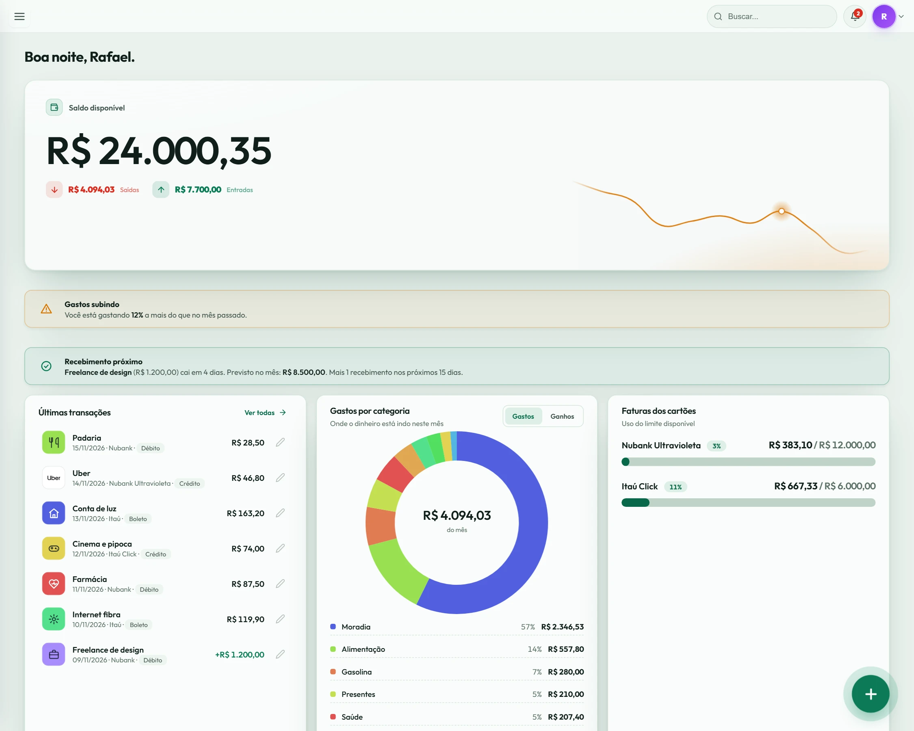
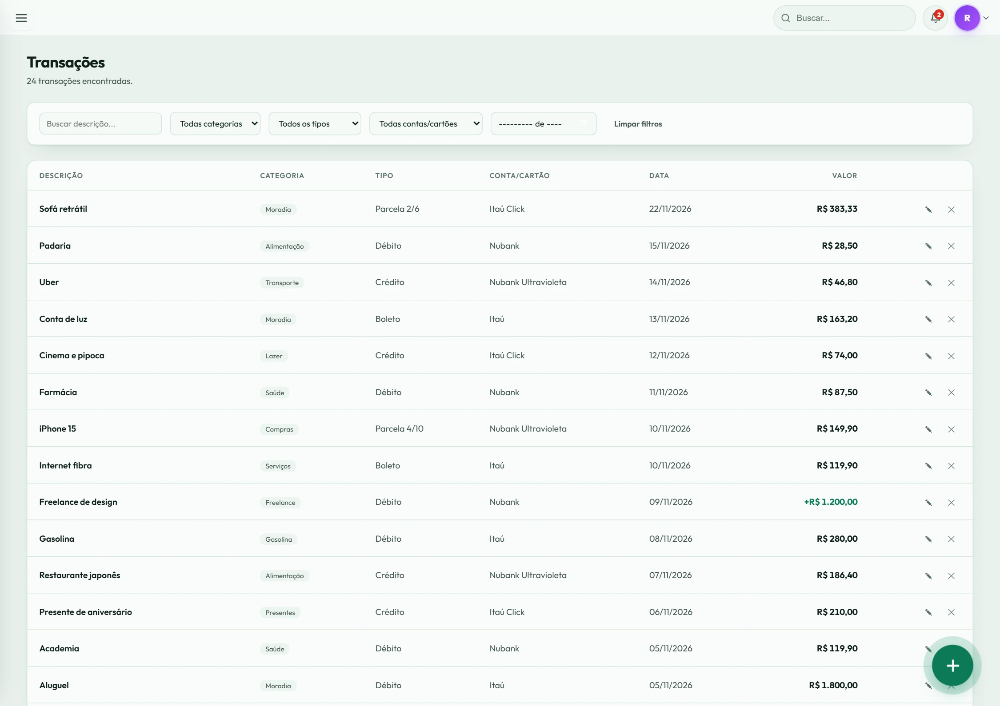
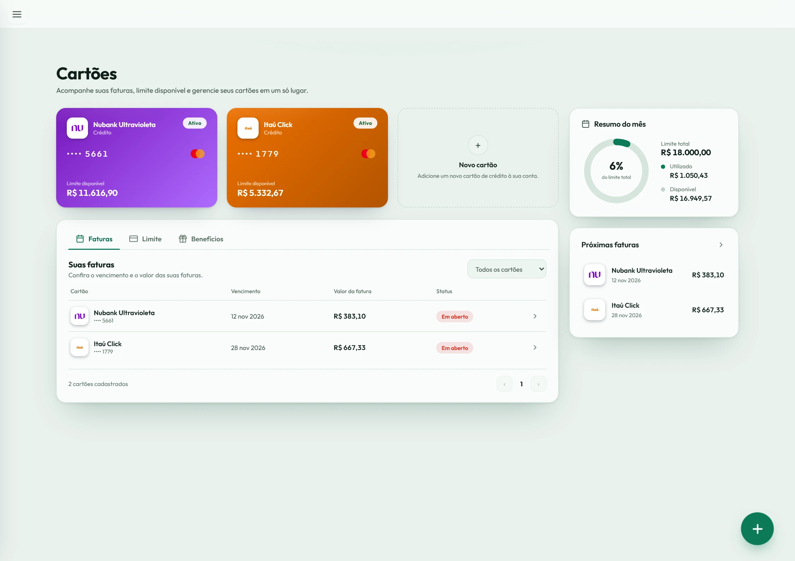
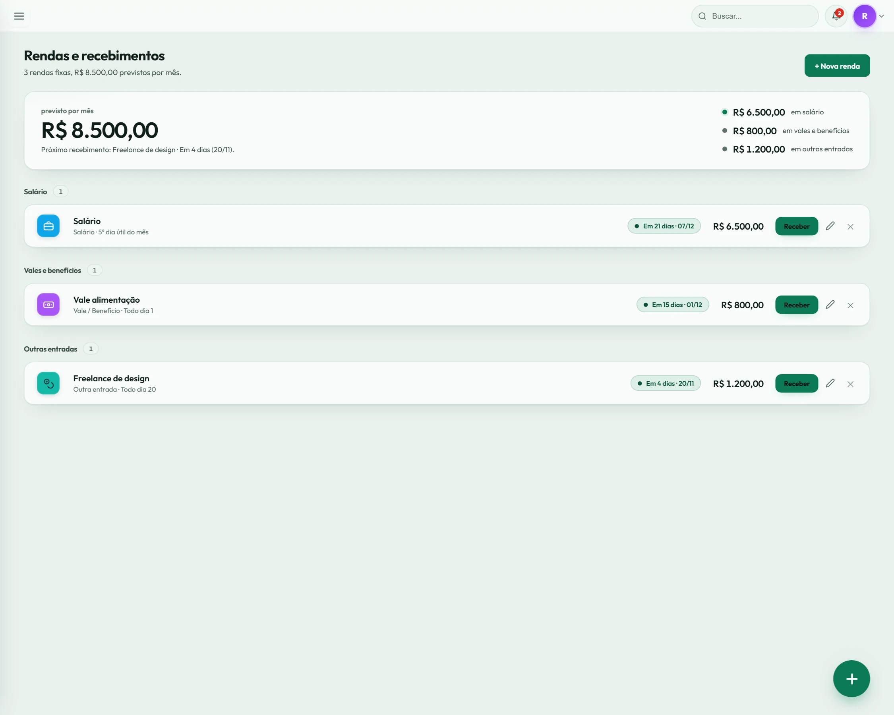
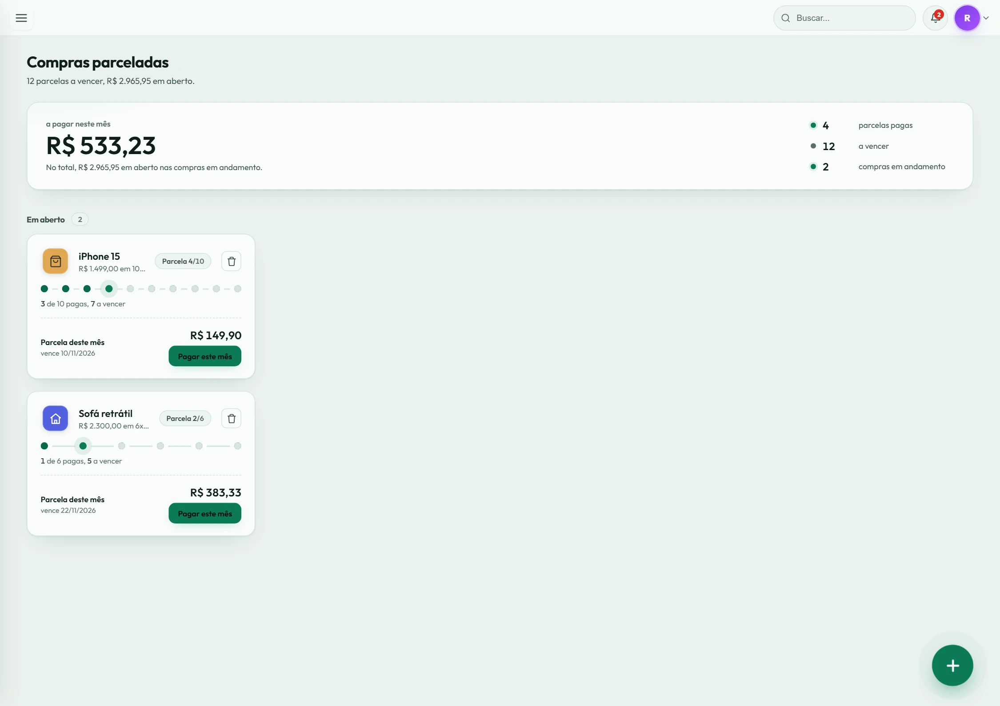
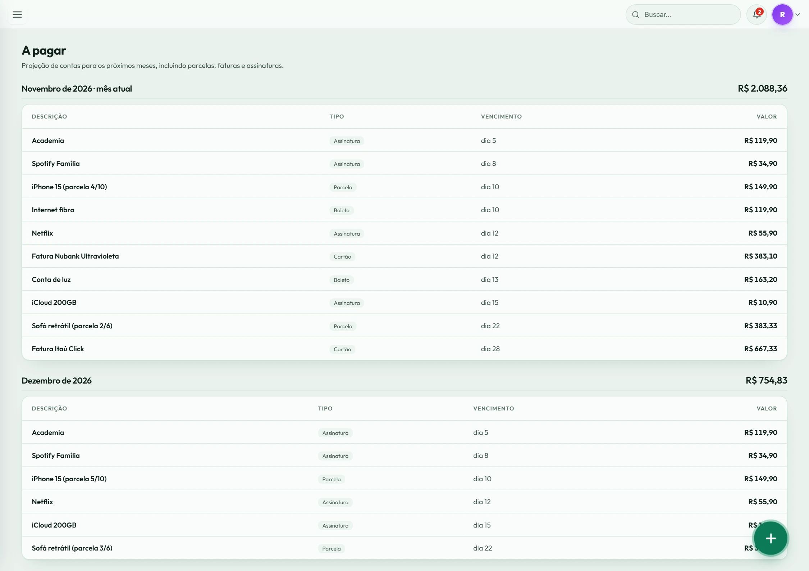
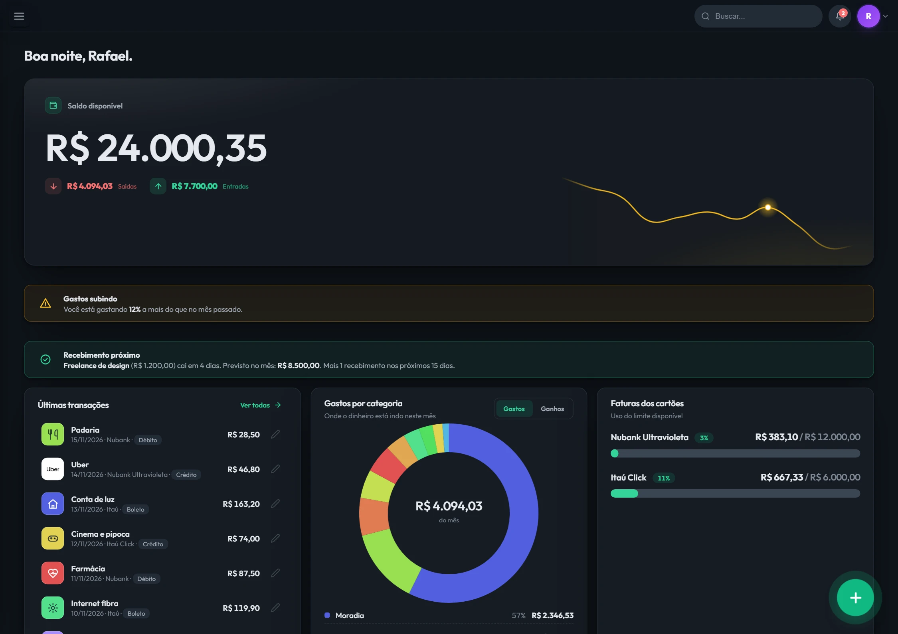

Mercado sem ruído.
Selic, IPCA, dólar PTAX e uma watchlist que você monta. As cotações vêm da brapi, com token opcional, e ficam em cache para não pesar.
PETR4VALE3ITUB4MGLU3
Controle financeiro pessoalsem cadastro
Contas, cartões, faturas e assinaturas no mesmo painel. O sistema soma, projeta e avisa antes do aperto.

Como funciona
O app foi desenhado para responder uma pergunta simples: como está o meu dinheiro agora e o que vem pela frente?
Nome, objetivo, bancos, contas, cartões, parcelas, assinaturas, gastos fixos e tema. O guia monta o painel com o que você já tem, sem obrigar a preencher tudo.
Pix, débito, crédito, boleto ou compra parcelada. Cada lançamento atualiza saldo, fatura, categoria e projeção. Dá para editar, excluir e desfazer.
Saldo somado, entradas e saídas, gasto por categoria, limite usado e um diagnóstico de saúde financeira que destaca o que pede atenção.
A projeção dos próximos três meses junta parcelas, assinaturas e faturas. Você enxerga o aperto antes que ele chegue e sabe quanto precisa reservar.
As mesmas informações, organizadas pelo tipo de decisão que você precisa tomar.





Imagens do aplicativo com dados de exemplo. Nada é enviado para fora do navegador.
Além do painel, o app cobre o que costuma escapar das planilhas.
Selic, IPCA, dólar PTAX e uma watchlist que você monta. As cotações vêm da brapi, com token opcional, e ficam em cache para não pesar.
O tema acompanha sua escolha e vale para o app e para esta página.

Crie categorias com nome e cor. Gastos e ganhos aparecem agrupados do seu jeito, com legenda e ícone.
Exporte tudo em um arquivo JSON e importe em outro navegador. Sem conta para recuperar e sem surpresa.
financas-backup.jsonNavegação por teclado, foco visível, contraste alto e respeito a quem prefere menos movimento na tela.
Nada de saldo mágico. Cada valor tem uma regra simples, aplicada na hora, dentro do seu navegador.
As contas abaixo são as mesmas usadas pelo aplicativo. Se um lançamento muda, o painel inteiro se recalcula.
saldo = Σ contasSoma o saldo de todas as contas cadastradas. Pix, débito e boleto reduzem na hora; crédito e parcelado entram na fatura, não no saldo.
fatura = Σ compras no cicloO ciclo começa no dia de fechamento e termina no fechamento seguinte. Compras e parcelas com data dentro do período entram na fatura.
previsão = assinaturas + parcelasPara os próximos três meses, soma as assinaturas ainda não pagas no mês e as parcelas com vencimento em cada mês.
saídas = Σ saídas − liquidadasPagamentos de fatura e de parcela já liquidados ficam fora da soma para não contar duas vezes. O restante é o gasto real do mês.
atrasos · saldo × vencimentos · variaçãoFica vermelho com conta atrasada, saldo negativo ou vencimentos de 15 dias maiores que o saldo. Fica amarelo com gastos subindo mais de 8% ou mês no vermelho.
Privacidade
Não existe cadastro, servidor ou sincronização. Seus lançamentos ficam no armazenamento local do navegador, acessíveis só por este dispositivo.
A única chamada externa é para cotações de mercado (brapi e indicadores públicos). Ela envia apenas o ticker consultado, nunca seus lançamentos.
O que costuma vir antes de abrir o app pela primeira vez.
Não. O app abre direto no guia de configuração e funciona sem login. Não há e-mail, senha ou confirmação.
No armazenamento local do navegador que você está usando, em uma chave chamada cofre_financas_v4. Nenhuma informação financeira é enviada para servidores.
Sim. Os dados vivem no navegador. Antes de limpar, abra as configurações do app e exporte um backup. Depois, use “Importar backup” para restaurar.
Pelo ciclo real do cartão, entre o dia de fechamento atual e o próximo. Compras no crédito e parcelas com data dentro desse intervalo entram na fatura. O limite disponível é o limite total menos esse valor.
Selic, IPCA e dólar PTAX vêm de fontes públicas e ficam em cache por algumas horas. As ações usam a brapi, com cache de 30 minutos e sandbox gratuito para alguns tickers. Você pode informar um token próprio.
Sim. O layout se adapta a telas pequenas, com menu lateral deslizante, tabelas roláveis e formulários em uma coluna. O mesmo backup serve para trocar de dispositivo.
Abra o app, responda o guia e veja o mês inteiro em uma tela.
Abrir o app